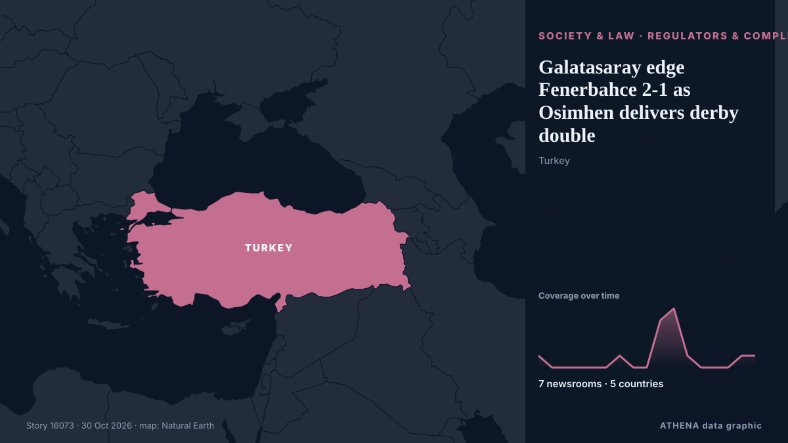

Galatasaray edge Fenerbahce 2-1 as Osimhen delivers derby double

Nigerian striker scores twice in first half as reigning champions hold off Yellow Canaries' second-half fightback. von Anadolu Agency (English)
Unabhängig gemeldet von 7 Medien in 5 Ländern seit dem 22. Okt., zuerst von Türkiye Today; die Berichterstattung flaut ab. ATHENA stuft das Risiko als niedrig ein (1.3/10), vor allem wegen der Schwere des beschriebenen Schadens und der Qualität der Belege. Die Konfidenz liegt bei 79 % (hoch): 7 Medien bestätigen es unabhängig, bei einer mittleren Verlässlichkeit der Quellen von 76 %.
Warum es wichtig ist: Rechtliche und politische Änderungen verändern Rechte, Pflichten und öffentliche Leistungen für die Betroffenen.
Was sich geändert hat: 2 neue Berichte von 2 Redaktionen in den 24 Stunden bis 30. Okt..
Schlagzeilen werden auf Englisch angezeigt, wie veröffentlicht.
Auf einen Blick
Ausgewählt, bewertet und geschrieben nach der veröffentlichten Methodik von ATHENA. Kein Redakteur greift in einzelne Ereignisse ein. So entsteht ATHENA ›
| 22 Oct 07:03 UTC | 1 |
|---|---|
| 22 Oct 19:03 UTC | 0 |
| 23 Oct 07:03 UTC | 0 |
| 23 Oct 19:03 UTC | 0 |
| 24 Oct 07:03 UTC | 0 |
| 24 Oct 19:03 UTC | 0 |
| 25 Oct 07:03 UTC | 1 |
| 25 Oct 19:03 UTC | 0 |
| 26 Oct 07:03 UTC | 0 |
| 26 Oct 19:03 UTC | 4 |
| 27 Oct 07:03 UTC | 5 |
| 27 Oct 19:03 UTC | 1 |
| 28 Oct 07:03 UTC | 0 |
| 28 Oct 19:03 UTC | 0 |
| 29 Oct 07:03 UTC | 0 |
| 29 Oct 19:03 UTC | 1 |
| 30 Oct 07:03 UTC | 1 |
| 22 Oct 07:16 UTC | 0.0 |
|---|---|
| 30 Oct 07:25 UTC | 1.3 |
| 30 Oct 07:25 UTC | 1.3 |
Warum diese Zahlen
Bedeutung
Risiko
Konfidenz
Die Berichterstattung – wer berichtete, und wann
Schlagzeile wie veröffentlicht · öffnet das Original- Türkiye Today · Türkei · TurkeyVictor Osimhen sends message to Fenerbahce ahead of Galatasaray derby
- Türkiye Today · Türkei · TurkeyGalatasaray, Fenerbahce meet for 407th time in Istanbul
- Türkiye Today · Türkei · TurkeyGalatasaray edge Fenerbahce 2-1 as Osimhen delivers derby double
- Anadolu Agency (English) · Türkei · TurkeyOsimhen's brace fires Galatasaray to 2-1 derby victory over Fenerbahce
- Punch · NigeriaOsimhen’s brace sinks Fenerbahce as Galatasaray win 2-1
- Al Jazeera English · Katar · QatarMass brawl between Galatasaray and Fenerbahce after Istanbul derby
- Premium Times · NigeriaSuper Lig: Osimhen lifts Galatasaray to top spot with two goals against Fenerbahce
- CNA (Channel NewsAsia) · Singapur · SingaporeGalatasaray deny Fenerbahce claims after derby brawl
- Anadolu Agency (English) · Türkei · TurkeyIstanbul's Fenerbahce part ways with head coach Ismail Kartal
- Türkiye Today · Türkei · TurkeyFenerbahce parts ways with coach Ismail Kartal a day after derby defeat
- Türkiye Today · Türkei · TurkeyGalatasaray tops Fenerbahce as all-time derby winners after 2-1 win
- Punch · Nigeria‘Osimhen too good for Turkish league’
- Türkiye Today · Türkei · TurkeyFenerbahce and Galatasaray fined after derby fight